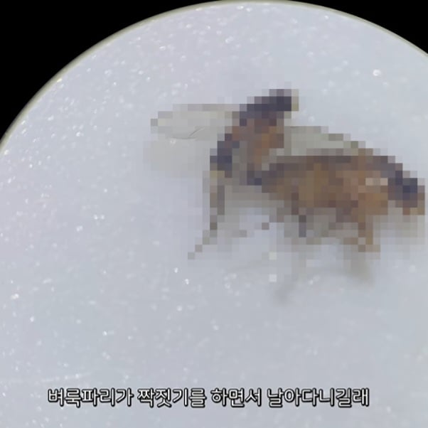
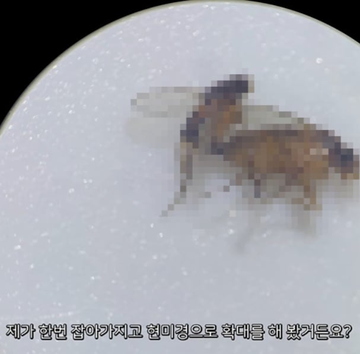
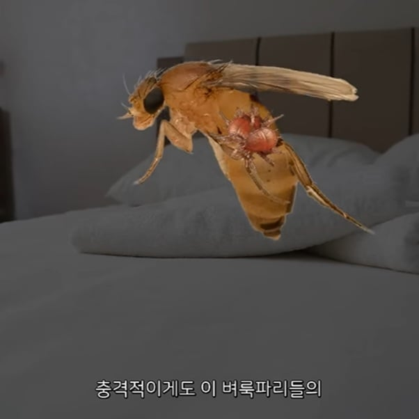
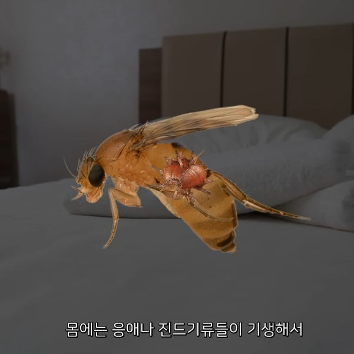
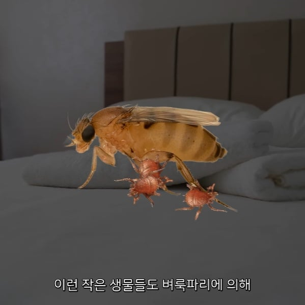
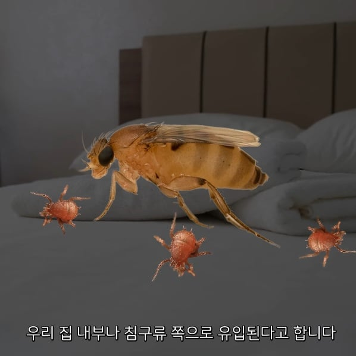

기생충 문제도 생김






기생충 문제도 생김
언제부터 벼룩파리 설치기 시작하더라
난모든걸포기하고 내머리에 둥지짓게해줬음
1.이산화탄소에 반응하기 때문에 콧구녕에 가미카제함
2. 섹스비행을 하기 때문에 보기 좆같음
3. 요즘은 안 날고 걸어다녀서 전기파리채로 사냥하기 어려움.
(new) 응애 데리고 다님.
개씨발새끼 goat
섹스비행할때 존나느려져서 그나마 잡을만해짐 ㅋㅋ
그때 죽여버리면 아 이새끼들 알까기전에 죽였다는 만족감 maxㅋㅋㅋ
솔직히 그럴때 잡으면 2마리라서 존나 만족감 좋긴함 ㅋㅋㅋ
ㅅㅂㅅㅂㅅㅂㅅㅂㅅㅂㅅㅂㅅㅂㅅㅂㅅㅂㅅㅂ좆기는 선녀였네
진짜 좆기따위는 벼룩파리에 비하면 선녀임
벼룩파리는 이산화 탄소가 아니라 단백질이 상할때 나는 썩은내 계열에 환장함
잘씻으면 얼굴에 덜 달라붙음
저 영상에서 이산화탄소에도 끌리긴 한대
하아 매일 바나나를 사두고 먹는데조금만 관리잘못하면 바로 생겨서 개짜증
난 포기하고 냉장고에 넣어둠...
사와서 흐르는물로 간단히 씻으면 확실히 좋아지긴하더라고
아니 씨이이이이이발 벼룩파리 저 개존만한놈의 몸통만한 것도 아니고 다리 끝에 더 더 개작은 혐드기까지 달고 다닌다고?.... 이건 처음 알았네 진짜 씨발 그자체네...
반찬 속으로 다이빙함. 쫓아도 안 도망감. 이 새끼 나오는 식당 존나 많음
작년까지 벼룩파리때문에 고생하다 포충기 샀는데 존나 좋은듯 포충기에 벼룩파리 시체밭 만들어져 있고 내 주위에 날아다니는 놈들 사라짐 집에 포충이없으면 하나 사서 써봐라 효과 좋다
벼룩파리는 집을 청결하게 유지하면 박멸은 안돼도 좆같지는 않을 정도로 생활할 수 있음
벼룩파리는 음쓰 관리만 잘해도 안생김
귀찮으면 남은거 냉동실에 처박고 물량 쌓이면 한번에 터는데
음쓰 냉동실에 놔두면 세균 번식한다는 말도 있지만
알빠노 안보이는 세균보다 눈에 보이는 좆좆좆좆이 더 좆같으니까
옆집에 콜로니 까면 숨만 쉬어도 들어온다
시골은 자연발생을 하는 느낌임. 창문을 안열어도 하수구마다 락스를 부어도 발생함...
진짜 내가 아프면 약먹으면되는데 저 잡놈들은 방법이 없음 음쓰 최대한 줄이면 줄어들긴하는데 대체 어디서 나오는지 모르겠음 그런데 겨울되면 또 귀신같이 사라짐
휙! 나타났다 휙! 사라졌다
이 개새끼 진화를 하는지 지 못잡을거같을땐 시야에서 존나 도발하는데 각잡고 죽일라니까 사라져버림 비행을 안함 게릴라전이 열받는 이유를 알 수 있었음
저거 시발 휴지로 탁 쳐서 잡으면 브루들링 나오듯이 두마리씩 튀어나옴 개씹극혐이야 십새끼들
와 실력 좋다 휴지로 쳐서 잡아? 전기파리채로도 존나 빡센데
인간을 괴롭히기 위해 태어난 새끼들임
나 저 기생벌레들 본적있음 딱 손바닥으로 쳐 잡으니 기어감
시발 초파리처럼 과일같은거나 쳐먹으라고 아니면 얼굴로 날라오지말라고 쓉!뻘!놈아!
시발 대왕 똥파리가 더 사랑스럽다고 좆같은새끼
이새끼들 손으로잡기 개 힘들어서 잡고나면 도파민 죽이긴 함
집에 좀 생겼으면 그냥 하루 쓰레기 다 버리고 온 집안에 에프킬라 화생방 수준으로 뿌리고 나갔다 들어오면 박멸됨.
아 요새 자꾸 한 마리씩 돌아 다녀서 짜증남. 잡으면 얼마 후에 또 나오고, 잡으면 도 나오고, 아주 사람이 미쳐버림. 음쓰도 없는데 집에.
쓰레기통 입구 바로 옆에 노란 끈끈이 설치하면 효과 좋음. 보기는 싫지만
포충기 번개표 넉다운 두개정도 시켜서 방에 두고 출근할 때 불끄고 나가면 한 30마리 죽어있을거임
아
음식묻은 일반쓰레기는 무조건 애벌봉투로 묶어서 버림 그리고 쓰레기통에 살충제 존나뿌림 이러면 안나오긴 함..
더 심각한 놈이였네
여기서 잡았다는 애들 거의 초파리임 ㅋㅋ
벼룩파리는 인간이 잡긴 힘듦
뭔 개소리임
저런 파리들 중에 사람눈에 알 낳으려는 애들도 있다더라 ㄷㄷ
오버로드 속업 수송기능업
다이소에 파는 초파리 트랩? 그 빨간 뚜껑에 투명 바닥 플라스틱으로 되어있고 거기에 노란색 브로콜리모양 끈끈이 끼워서 쓰는 제품 있는데 그거 5개 사서 집안 곳곳에 놔두니까 3일정도만에 100마리정도 잡고 그 뒤론 완전 박멸됨ㅋㅋ 개빡쳐서 5개 산건데 1만원으로 행복 찾았다.
맨날 퇴근해서 집에올때마다 오늘은 몇마리나 잡혔을까ㅎㅎ 기대하면서 퇴근함ㅋㅋ
플라이스틱 << goat
오버로드 속업 왜케 많이 했냐